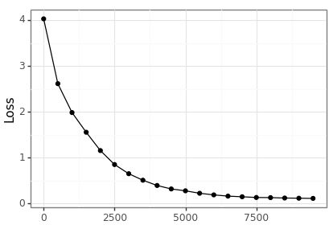

AANN 25/01/2024
Simultaneous quantile regression
In this example we will use the simultaneous quantile regression (SQR) as proposed by Tagasovska and Lopez-Paz (2019) to compute the quantiles of a prediction. Basically, SQR is a way to get a quantification of the uncertainty in a prediction produced by a neural network. If you want to get technical, this is an instance of aleatoric uncertainty (i.e. assuming we have the model specified correctly), as opposed to epistemic uncertainty (i.e. the uncertainty that derives from possible model misspecification.) Since I am mainly interested in the aleatoric uncertainty, I will ignore the orthonormal certificates that Tagasovska and Lopez-Paz proposed as a way to manage the epistemic uncertainty.
We will apply SQR to the simple problem of estimating the location of a distribution. Since this is about the loss function rather than the network, we will just use a simple feed-forward network to generate the estimates.
Data generating process
The input to the process is \(x_i=(x_i^1,\ldots,x_i^m)\) where
\[ x_i^j\sim\text{Normal}(\mu_i,1). \]
The output we want to predict is \(y_i=\mu_i\) where \(\mu_i\sim\text{Normal}(0,10)\). This model is simple enough that we can calculate the quantiles analytically.
Loading packages
PyTorch has some nice random number generation functionality and this saves us needing to put the values into tensors later. We set the seed to keep things reproducible.
import time import sys import os from pathlib import Path import torch import torch.nn as nn import torch.optim as optim from torch.distributions import normal, uniform import pandas as pd import plotnine as p9 from plotnine import * current_directory = Path(os.getcwd()) sys.path.append(str(current_directory.parent)) import niceneuron.plot as nn_plot torch.manual_seed(0)
Define the input and output filenames
There is a replicate_size (in addition to a number of replicates)
because we are using a permutation invariant network similar to the
previous post, and each data point consists of a set of observations.
loss_png = "loss.png" loss_csv = "loss.csv" coverage_png = "coverage.png" replicate_size = 10 train_num_replicates = 10000 train_num_epochs = 10000 train_record_every = 500 test_num_replicates = 100
Define the network architecture
- We call the network
LocationNBbecause it estimates the location parameter of a sample and is reminiscent of the neural Bayes structure. - To ensure it is permutation invariant we compute three summary statistics as a preprocessing step: the median and the first and second moments.
- A value for
tauis given as input so the network knows what quantile to compute.
class LocationNB(nn.Module): def __init__(self, m): super(LocationNB, self).__init__() self._m = m # dataset size: {z_1,...,z_m} self._num_S = 3 # number of summary statistics self._q = 10 # latent dimension self._p = 1 # output dimension self._phi = nn.Sequential( nn.Linear(self._num_S + 1, self._q), nn.Sigmoid(), nn.Linear(self._q, self._p), ) def signed_sqrt(self, x): return torch.sign(x) * torch.sqrt(torch.abs(x)) def forward(self, x, tau): # assert x.dim() == 2 and x.shape[1] == self._m # assert tau.dim() == 1 and x.shape[0] == tau.shape[0] s0 = torch.median(x, dim=1).values s1 = torch.mean(x, dim=1) s2 = torch.mean(x**2, dim=1) tmp = torch.stack([s0, s1, s2], dim=1) tmp = self.signed_sqrt(tmp) tmp = torch.cat([tmp, tau.unsqueeze(1)], dim=1) return self._phi(tmp).squeeze(1)
Define the pinball loss function
We define the pinball loss as a PyTorch loss function so the network can learn to predict quantiles. To see why this function yields the quantile estimator you need to solve for the root of the derivative.
IMPORTANT: This definition allows for the use of a different value of \(\tau\) for each element of the target tensor. This is the distinguishing factor of simultaneous quantile regression. Training the network to learn multiple quantiles simultaneously apparently provides a partial resolution to the crossing quantile problem where the ordering of the quantiles is not respected.
class PinballLoss(nn.Module): def __init__(self): super(PinballLoss, self).__init__() def forward(self, predictions, targets, tau): err = targets - predictions loss = torch.where(err >= 0, tau * err, (tau - 1) * err) return torch.mean(loss)
Define data generating process
Because we are going to need separate training and testing datasets, it is helpful to have a function that makes it easy to simulate new data.
def rand_dataset(num_replicates: int, replicate_size: int): mu_i = normal.Normal(torch.tensor([0.0]), torch.tensor([10.0])).sample( sample_shape=torch.Size([num_replicates]) ) x_i = ( normal.Normal(loc=mu_i, scale=torch.tensor([1.0])) .sample(sample_shape=torch.Size([replicate_size])) .transpose(0, 1) .squeeze(2) ) y_i = mu_i.squeeze(1) return y_i, x_i
Prepare for training
Because it worked out of the box, I didn't see much need to go beyond a standard Adam optimizer.
loc_nb = LocationNB(replicate_size) pb_loss = PinballLoss() optimizer = optim.Adam(loc_nb.parameters(), lr=1e-3)
Run the training loop
At each epoch we simulate a new data set so we don't need to worry about batching or shuffling or precomputing all the data beforehand. It would be nice to extend this to include a stopping criterion.
loc_nb.train() loss_history = [] training_start_time = time.time() for epoch in range(train_num_epochs): # Sample training data train_y, train_x = rand_dataset(train_num_replicates, replicate_size) train_tau = ( uniform.Uniform(torch.tensor([0.0]), torch.tensor([1.0])) .sample(sample_shape=train_y.shape) .squeeze(1) ) # Forward pass preds = loc_nb(train_x, train_tau) loss = pb_loss(preds, train_y, train_tau) epoch_loss = loss.item() # Backward pass optimizer.zero_grad() loss.backward() optimizer.step() if epoch % train_record_every == 0: print(f"Epoch {epoch} loss: {epoch_loss}") loss_history.append((epoch, epoch_loss)) training_finish_time = time.time() print(f"Training took: {training_finish_time - training_start_time}")
Visualise training results
We can visualise the training error across the epochs.

loss_df = pd.DataFrame(loss_history, columns=["epoch", "loss"]) loss_df.to_csv(loss_csv) loss_p9 = nn_plot.plot_loss_curve(loss_df) loss_p9.save(loss_png, height = 2.9, width = 4.1)
Test the network performance
To test how well-calibrated the predicted quantiles are we generate a large dataset and then investigate how often the empirical quantiles match up with the desired ones. The performance is great, but by no means perfect.
test_y, test_x = rand_dataset(test_num_replicates, replicate_size) test_alpha = torch.linspace(0.05, 0.95, steps=20) test_results = [] for ix in range(test_alpha.shape[0]): tau_0 = (0.5 * test_alpha[ix]).repeat(test_num_replicates) tau_1 = 1 - tau_0 test_est_lower = loc_nb(test_x, tau_0) test_est_upper = loc_nb(test_x, tau_1) test_correct = torch.sum( (test_est_lower <= test_y) & (test_y <= test_est_upper) ).item() test_results.append((test_alpha[ix].item(), test_correct, test_num_replicates))
Visualisation
test_df = pd.DataFrame(test_results, columns=["alpha", "correct", "total"]) ( ggplot(test_df, aes(x="1-alpha", y="correct/total")) + geom_point() + geom_abline(intercept=0, slope=1, color="red") + scale_x_continuous(limits=(0, 1)) + scale_y_continuous(limits=(0, 1)) + theme_bw() ).save(coverage_png, height=2.9, width=4.1)
Discussion
Simultaneous quantile regression produces a generic quantile regression model. However, the method lacks finite-sample guarantees. Quantile regression can be combined with conformal prediction to yield conformalized quantile regression to overcome this limitation (as described by Romano et al (2019)).